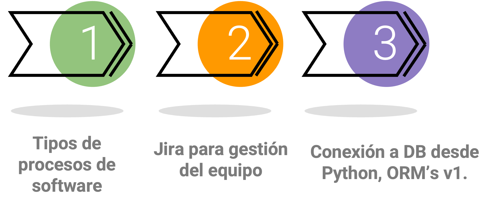
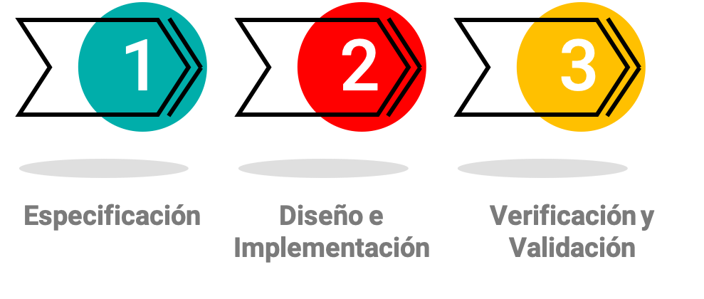
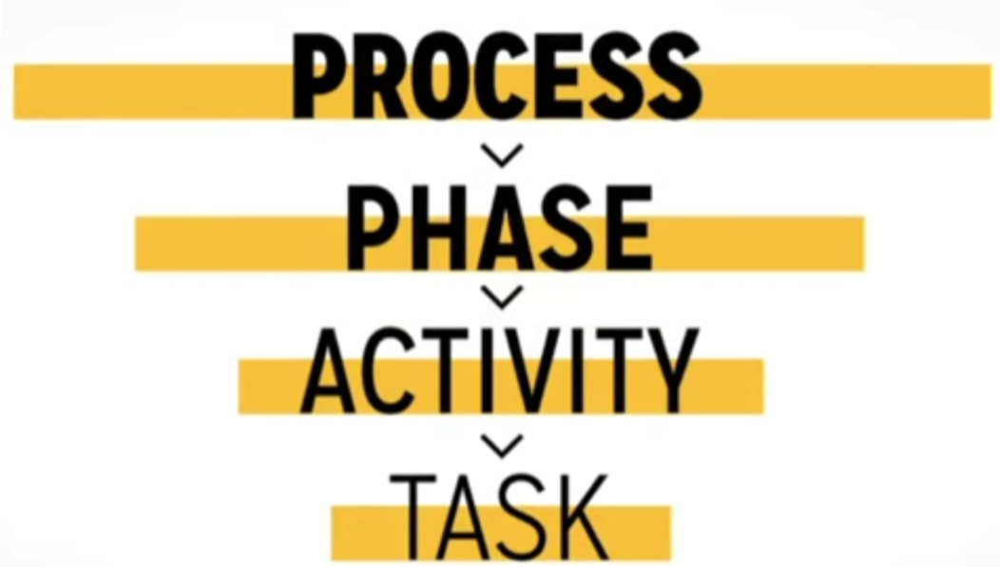
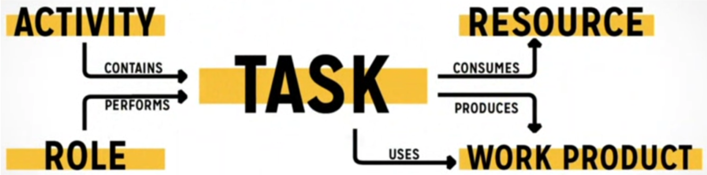
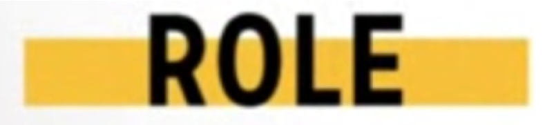
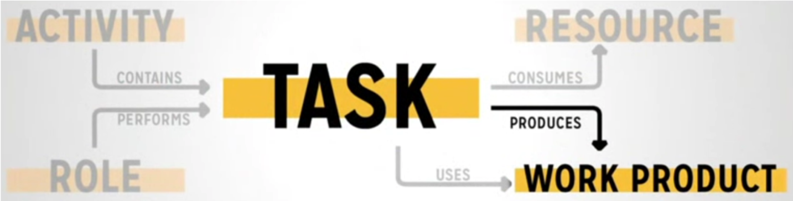

Unidad 3: Modelos de procesos de software#
Contenido de la unidad#
Procesos de Software#
También llamados los ciclos de vida del software, son metodologías para el desarrollo de software de manera sistematizada y en equipo.
Permiten estructurar y medir el avance de un proyecto
En rasgos generales, el proceso de desarrollo de software contempla 3 grandes etapas.
Especificación en la que se toman los requerimientos, se definen los objetivos del proyecto, las fases y el plan de trabajo
Diseño e implementación es la etapa en la que se codifican las funciones, módulos, versiones del software (es la etapa de programar).
Verificación y validación es la etapa de retroalimentación por parte de los tester y de los usuarios para validar lo que se implementa.
Conceptos a conocer de un proceso de software#
En cada proceso se maneja la misma convención.
Para los proyectos:
Todo se organiza por fases (objetivo general): Son etapas específicas acumulativas.
Cada fase cuenta con actividades (objetivos específicos): Describen los objetivos que se desean cumplir en esa fase.
Cada actividad cuenta con tareas: Unidades granulares del proceso de software, no toman más de un día en realizarse.
Ejemplo para una tarea específica#
Este es un ejemplo en el que se ve como es la estructura para una tarea específica
Una actividad contiene tareas.
Un Rol determinado desarrolla esa tarea.
Una tarea consume recursos -> (tiempo, dinero, tecnología).
Note
Una TAREA utiliza productos, los productos son documentos o resultados de las fases iniciales, Un documento puede ser: requerimientos, el diseño de una arquitectura,etc.
A su vez, la TAREA genera nuevos productos: una funcionalidad, un documento de reporte de pruebas, etc.
¿Qué cosas se consideran una tarea?
Escribir una pieza de código de software.
Diseñar una característica.
Escribir documentación.
Instalación de una librería.
Probar una función.
Roles dentro de un equipo de desarrollo de software

Programador (También se le llama desarrollador)
Tester (Se le denomina QA, Quality Assurance)
CEO (Gerente de la compañía, Chief Executive Officer)
CTO (Gerente técnico, Chief Technical Officer)
Cliente (Cliente final - no confundir con el usuario final -)
Gerente de proyecto ( Conocido como project manager)
Warning
Aunque estos roles tienen nombres diferentes a los que se definieron en la metodología TSP, son ejmplos de los roles que se involucran en el desarrollo de software en empresas. Las responsabilidades y roles de estos son similares a la que se definen en la metodología TSP.
Productos / artefactos

Producto |
Recursos |
|---|---|
* Diseños |
* Tiempo |
* Requisitos |
* Dinero |
* Código fuente |
* Tecnología |
* Casos de prueba |
* Conocimiento |
* Documentación interna |
* Personal (Talento Humano) |

Ejemplos de productos / artefactos y recursos
Buenas prácticas para las tareas
Planificar el alcance de la tarea de acuerdo a la versión
Estimación de la duración de las tareas
Realización de breves reuniones diarias